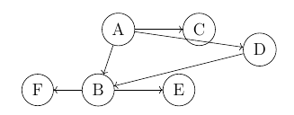
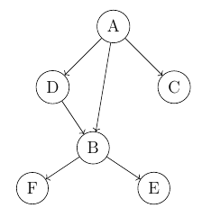

Layers in graph
Determining layers in graph means representing graph in particular way.
Let us take such small example graph to consider.

It is important to point out that we are saying about directed acyclic graphs only. This means that e.g. we have relation A to B, but not B to A. We also do not have loops, like A \(\rightarrow\) B \(\rightarrow\) C \(\rightarrow\) A.
What we want is to present graph in such a way, that nodes are provided in layers. This means that nodes in the same layer do not depend on each other. Graph given above, would look like follows, having four layers.

| Layer 1 | A |
| Layer 2 | C,D |
| Layer 3 | B |
| Layer 4 | E,F |
The simplest (but also most complex) algorithm to determine number of layers and their nodes is based on matrix representation of graph. Let us describe graph above as a matrix, where rows and columns are representing nodes, and cells of matrix determine, whether there is relation between given nodes - value 1 means that there is a relation.
$$\begin{array}{cccccccc}
& A & B & C & D & E & F \\
A & 0 & \colorbox{yellow}{0} & 0 & 0 & 0 & 0 \\
B & \colorbox{yellow}{1} & 0 & 0 & 1 & 0 & 0 \\
C & 1 & 0 & 0 & 0 & 0 & 0 \\
D & 1 & 0 & 0 & 0 & 0 & 0 \\
E & 0 & 1 & 0 & 0 & 0 & 0 \\
F & 0 & 1 & 0 & 0 & 0 & 0 \\
\end{array}$$
Because we are saying about directed (so one-way) directions, we do not populate this matrix simetrically. This means that we need to assume particular approach. Here columns determine source nodes, while rows determine target nodes. Therefore, in column A row B, we have value 1, as we do have relation A to B. Similarly, in column B row A we have value zero, as there is relation B to A.
Now, to find first layer and its nodes, we simply go through matrix and find all rows, which have all values zero. This means that nodes, which are represented by such rows, are not dependent on any other nodes. In our example, we have one such row, which corresponds to node A. We save this node in a first layer and then remove from our matrix both row and column that belong to our taken node.
$$\begin{array}{cccccccc}
& \enclose{horizontalstrike}{A} & B & C & D & E & F \\
\enclose{horizontalstrike}{A} & \enclose{horizontalstrike}{0} & \enclose{horizontalstrike}{0} & \enclose{horizontalstrike}{0} & \enclose{horizontalstrike}{0} & \enclose{horizontalstrike}{0} & \enclose{horizontalstrike}{0} \\
B & \enclose{horizontalstrike}{1} & 0 & 0 & 1 & 0 & 0 \\
C & \enclose{horizontalstrike}{1} & 0 & 0 & 0 & 0 & 0 \\
D & \enclose{horizontalstrike}{1} & 0 & 0 & 0 & 0 & 0 \\
E & \enclose{horizontalstrike}{0} & 1 & 0 & 0 & 0 & 0 \\
F & \enclose{horizontalstrike}{0} & 1 & 0 & 0 & 0 & 0 \\
\end{array}$$
This leads us to a new matrix of such shape:
$$\begin{array}{ccccccc}
& B & C & D & E & F \\
B & 0 & 0 & 1 & 0 & 0 \\
C & 0 & 0 & 0 & 0 & 0 \\
D & 0 & 0 & 0 & 0 & 0 \\
E & 1 & 0 & 0 & 0 & 0 \\
F & 1 & 0 & 0 & 0 & 0 \\
\end{array}$$
Now, we simply repeat whole procedure till we get empty matrix. Like in next step, where we can see that we have two rows with only zero values, corresponding to nodes C and D.
In next steps we fill find out that we have two more layers, one with node B and one with nodes E,F. Matrices after reduction will look as follows:
$$\begin{array}{cccc}
& B & E & F \\
B & 0 & 0 & 0 \\
E & 1 & 0 & 0 \\
F & 1 & 0 & 0 \\
\end{array}$$
$$\begin{array}{ccc}
& E & F \\
E & 0 & 0 \\
F & 0 & 0 \\
\end{array}$$
Now, question is, in which situations we may find it useful. This approach can be applied for instance, when we are given a table where we have dependency between tasks described in two columns: parent task and child task.
It is convenient in such situations to visualize, how the whole process looks like, we would like to know, what actual dependencies are and which tasks have to finish, so other can start.
Then instead of having table like following one:
| Parent task | Child task |
| A | C |
| A | D |
| A | B |
| D | B |
| B | E |
| B | F |
We could convert it to table with layers, like the one given earlier.